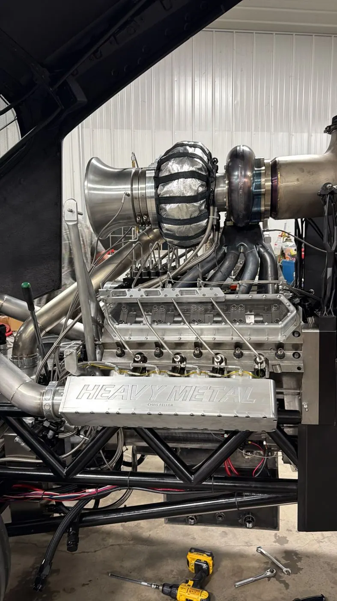

012014 · Tomah, WI
The name was never up for debate
Chris, a lifelong heavy metal fan, decided to build a Pro Stock pulling tractor. The name picked itself, and so did the nickname: “The Evil One”.
Our Story · Tomah to Waterloo, WI
It started in 2014 with one idea. That idea became a Pro Stock tractor, built by a family in its own shop. And that tractor was nicknamed “The Evil One”.

Twelve years, one family shop, zero shortcuts.
012014 · Tomah, WI
Chris, a lifelong heavy metal fan, decided to build a Pro Stock pulling tractor. The name picked itself, and so did the nickname: “The Evil One”.

02Feb 2020 · First bolt
The first bolt went in at the family shop in Waterloo. Then came nights and weekends stolen from work and family, sketches redrawn a thousand times, and a shop the whole family turned into a second home.

03The shop · Waterloo, WI
A Cat 3208 V8 in reverse flow, a setup you won't find on any other tractor on the track. 636 cubic inches stock, built out to 680. Nothing about it was quick. Full spec sheet
042026 · The night it fired
Then, in 2026, the moment came. Chris stood in the shop and turned the engine over for the first time.
Some would call it a coincidence. We call it a sign. From that night on, there was no doubt about what we had built.


052026 · First pull
The first pull didn't go the way anyone hoped. A small, unexpected issue came up and the run ended before it should have. It was a disappointing day.
We won't sugarcoat it.
But getting the tractor onto a real track at all, after twelve years of building it with our own hands, was already something to be proud of. The story was just getting started.
Today · season
On the NTPA & PPL Badger State circuits. Every run goes in the Pit Log.
Last updated:
See the Pit Log06Friends on the circuit

“The Evil One” has a little brother across the ocean: Diesel Ross, a Pro Stock tractor in Europe owned by Gert Stessens from Belgium.
We met Gert at a pull in the Netherlands. Between the look of the two tractors and the friendship between Gert and Chris, “The Evil One” and Diesel Ross are considered tractor brothers.
07Walk-up song
Fear of the Dark
Iron Maiden · 2015 Remaster
The song “The Evil One” rolls up to the line with. Turn it up before the next pull. #HEAVYMETALPULLING
Playlist: créala en Spotify, copia su link (Compartir > Copiar enlace) y pégalo en el campo "Playlist link" de esta sección. El sitio muestra el reproductor oficial de Spotify (embed); lo que agregues o quites en Spotify se ve solo, sin tocar Shopify. Aquí el visor bloquea el reproductor, por eso ves el diseño. Video del rayo: Contenido > Archivos o link de YouTube; pon la duración real en "0:XX".
Family, friends and two mascots.
Chris F.
Owner, Driver & Crew Chief
20+years in tractor pulling
Had the idea in 2014, turned the first bolt in 2020 and was in the shop the night the lightning hit.
Isela F.
Manager, Marketing & PR
Cindy F.
Operations & Accounting
Daniela V.
Social Media & Marketing
Cricket F.
Team mascot · white
Daniel
Pit Crew
Jared F.
Pit Crew
Jim F.
Pit Crew
Tony B.
Pit Crew
Jeff L.
Pit Crew
John W.
Pit Crew
Brad S.
Pit Crew
Turbo
Team mascot · black
Merch designed by the crew. Every order fuels the team.